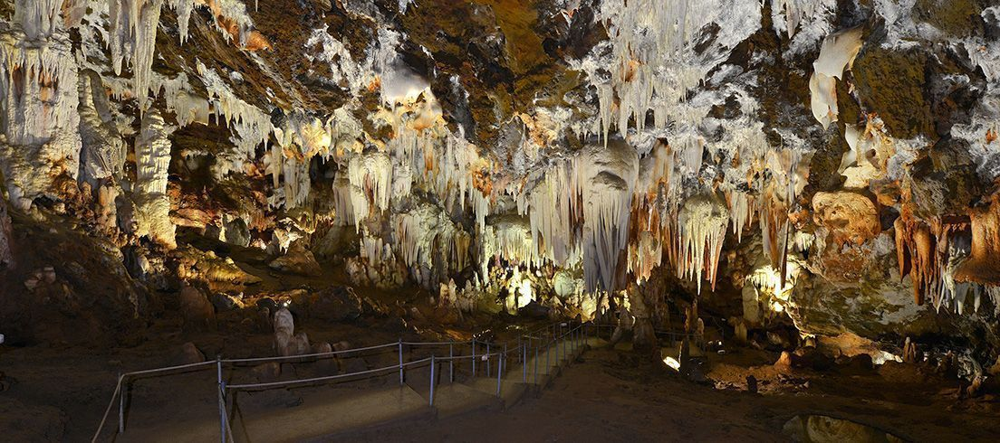

Menú
ÁVILA
- Página principal
- Localización
- Localidades
- Geografía
- Historia
- Cultura
- Naturaleza
- Tradiciones
- Otros aspectos de interés
Localización
Ávila es una provincia del centro de España perteneciente a la comunidad autónoma de Castilla y León. Su capital es la ciudad de Ávila y está formada por 248 municipios. Su relieve está marcado por la presencia al sur del Sistema Central, que la divide en dos zonas: la mayor parte del territorio abulense se ubica en la submeseta norte, si bien incluye también una franja al sur de la sierra de Gredos. Ávila es una de las provincias menos pobladas del país, con 158 698 habitantes.
La provincia, que tiene una extensión de 8051,15 km², está situada al sur de la comunidad autónoma de Castilla y León. Limita con las provincias de Madrid, Toledo (Castilla-La Mancha) y Cáceres (Extremadura), aparte de con las provincias castellano y leonesas de Salamanca, Segovia y Valladolid.
Si desea visualizar un mapa en el que se puede seleccionar cada una de las provincias de CyL, pinche en el siguiente enlace: Provincias de CyL
Localidades
Algunas de las localidades principales de la provincia de Ávila son:
- Arévalo: Arévalo es una ciudad y un municipio de España, perteneciente a la provincia de Ávila, en la comunidad autónoma de Castilla y León. Situada en el norte de la provincia, la localidad es la capital de la comarca de La Moraña o Tierra de Arévalo. El municipio cuenta con una población de 7.986 habitantes (INE 2019), lo que lo convierte en la segunda población en número de habitantes de la provincia tras Ávila, la capital.
- Arenas de San Pedro: Arenas de San Pedro es una ciudad y municipio de España situada en el sur de la provincia de Ávila, comunidad autónoma de Castilla y León. Es la capital de la comarca de Arenas de San Pedro. El municipio cuenta con una población de 6377 habitantes (INE 2019), lo que lo convierte en la tercera población en número de habitantes de la provincia, tras Ávila y Arévalo. Los núcleos de población de Ramacastañas, La Parra y Hontanares pertenecen al municipio bajo la forma de pedanías. Buena parte del municipio pertenece al espacio protegido del parque regional de la Sierra de Gredos, siendo el municipio más poblado del entorno del parque.
- Las Navas del Marqués: Las Navas del Marqués es un municipio de España perteneciente a la provincia de Ávila, en la comunidad autónoma de Castilla y León. Con 5187 habitantes en 2017 era el cuarto municipio más poblado de la provincia, tras la capital provincial, Arévalo y Arenas de San Pedro.
- Candelada: Candeleda es una localidad y un municipio español situado en el valle del Tiétar, al sur de la provincia de Ávila, comunidad autónoma de Castilla y León. Con una población de 5018 habitantes (INE 2019), es el quinto municipio de la provincia por población después de Ávila, Arévalo, Arenas de San Pedro y Las Navas del Marqués. Es también, con 213,91 km², el segundo municipio de la provincia por extensión, tras la capital.
Geografía
Ávila se encuentra ubicada a 111 kilometros al noroeste de Madrid, la capital de España. Está situada a 1.182 metros de altitud, en un enclave rocoso a la orilla derecha del Adaja, un afluente del Douro (Duero en español). La región de Ávila abarca 231,9 km².
Debido a esta ubicación el clima de Ávila es extremo con inviernos fríos y largos, y veranos calurosos.
Las coordenadas geográficas de Ávila son 40 ° 39 0 "N, 4 ° 41 '0" W
Historia
Tras la fundación romana y la asimilación de la población autóctona vetona de la zona —pues no existen indicios claros de un asentamiento prerromano en el casco histórico— la ciudad pasaría al poder visigodo.
Ávila cayó, al igual que la mayor parte del territorio peninsular, bajo dominio musulmán a comienzos del siglo viii, y no sería reconquistada de forma definitiva por las tropas cristianas hasta el siglo xi.
Experimentó un notable auge durante el siglo xvi, para verse posteriormente sumida en una prolongada crisis y declive hasta el siglo xix, en el cual la construcción del ferrocarril consiguió dar un empuje al desarrollo económico.
Cultura
Estas son algunas de las actividades culturales que se pueden realizar en la provincia de Ávila:
Museos
Casa de los Deanes, una de las dos sedes del Museo de ÁvilaEl principal museo de la ciudad es el Museo de Ávila, inaugurado en 1911. En el año 1968 adquirió identidad de Museo Provincial. Está gestionado por la Junta de Castilla y León desde 1987. El museo consta de dos localizaciones: la Casa de los Deanes, un palacio renacentista del siglo xvi que funciona como sede principal y la iglesia de Santo Tomé, levantada originalmente en el siglo xii, que se utiliza como almacén visitable. Las colecciones se engloban en tres grandes secciones: una representativa de la cultura rural de la provincia, otra que recoge piezas halladas en territorio abulense desde la Prehistoria hasta el siglo xix y finalmente una dedicada exclusivamente a piezas arqueológicas encontradas en excavaciones urbanas de la ciudad de Ávila.
En el interior de la catedral de Ávila, está instalado el museo de la Catedral, que alberga una exposición de arte religioso. En el convento de la Encarnación también existe una exposición permanente, que muestra diversos testimonios históricos de Santa Teresa de Jesús así como diversas piezas de arte religioso. También conserva piezas relativa a la vida y obra de San Juan de la Cruz. En la cripta del convento de Santa Teresa se localiza museo de Santa Teresa, que expone la obra y vida de la santa, así como diversas piezas de arte religioso.

Fuente: Ministerio de Cultura y Deporte
Convento de Santa Teresa
En el interior del monasterio de Santo Tomás se mantienen varios museos, como el de Arte Oriental y el de Ciencias Naturales. El museo de Arte Oriental fue inaugurado en el año 1964, está situado en el tercer claustro del monasterio de Santo Tomás y alberga una colección variada de piezas de Japón, Vietnam, Filipinas y China. El de Ciencias Naturales alberga una colección de ejemplares zoológicos que formaban parte del antiguo gabinete de historia natural de la orden dominicana del monasterio.
La ciudad cuenta así mismo con el museo Caprotti, ubicado en el palacio de Superunda, que alberga la obra del pintor italiano Guido Caprotti, afincado en Ávila desde 1916.

Fuente: civitatis.com
Exposiciones
Existen igualmente diversas salas de exposiciones, como la sala del Agua, la sala del Torreón de los Guzmanes, la sala de la Diputación y la sala del Episcopio.Durante el año 2004 la catedral acogió la exposición Testigos de la fundación «Las Edades del Hombre», con lo mejor del arte sacro castellanoleonés. Esta exposición se prolongó a lo largo de 223 días y recibió un total de 859859 visitantes. Durante el año 2006 se llevó a cabo la exposición «Las dos orillas», conmemoración del V centenario de la muerte de Cristóbal Colón.
Durante el verano se puede acceder a visitas nocturnas a la muralla, que son guiadas y teatralizadas los fines de semana. En estas se cuenta parte de la historia de la construcción de las murallas y de la ciudad.
Ferias y certámenes
- Mercado medieval: Durante el fin de semana posterior al primer viernes de septiembre de cada año tiene lugar un mercado medieval en el casco histórico de la ciudad. Se puede disfrutar de una ambientación, espectáculos y gastronomía propias del medievo. El lema bajo el que se celebra de «El mercado de las tres culturas» está referido a las principales culturas que han estado involucradas en la historia de la ciudad: cristiana, judía y musulmana. Durante esta semana parte de la ciudad y muchos de sus habitantes se visten de época y se llevan a cabo pasacalles y espectáculos durante el día y la noche, en distintas zonas temáticas que cuentan con sus respectivas denominaciones: Barrio judío, Zoco árabe, Campamento militar/Arqueros, Mercaderes cristianos, Campamento medieval, Rincón infantil, Episcopio o Cetrería.
- Festival de Teatro de Calle y Artes Circenses: Tiene lugar en temporada veraniega y se llevan a cabo distintos espectáculos callejeros, de índole gratuita.
- Arteávila: Se trata de un certamen anual de artesanía. Tiene lugar durante el mes de agosto en el paseo del Rastro y es organizado por la Asociación de Artesanías Varias de Ávila (ADAVA).
- E Boca: Muestra de vino y productos de la tierra, está promovida por la Asociación de Sumilleres de Ávila (ASA), y en el año 2013 se desarrolló durante el mes de febrero.
- Feria del Libro Antiguo y Ocasión: Certamen ferial anual, es organizado por la Asociación del Libro Viejo y Antiguo de Castilla y León (ALVACAL). Tiene lugar en la plaza de Italia o en el paseo del Rastro.
Naturaleza
- Parque Regional de la Sierra de Gredos: Es un espacio natural español protegido que se localiza en el extremo sur de la provincia de Ávila, en la comunidad autónoma de Castilla y León. Abarca una superficie de 86 236 hectáreas.

Fuente: Wikipedia - Cuevas del Águila: Están situadas en Ramacastañas, a 9 km de Arenas de San Pedro, en el valle del Tiétar, al sur de la provincia de Ávila, comunidad autónoma de Castilla y León, España bajo el cerro de Romperropas en la Sierra del Águila.
Su descubrimiento se produjo en la tarde del 24 de diciembre de 1963, por cinco jóvenes que merodeaban cazando por la zona, al observar que de un agujero salía vaho. El vaho se producía por la diferencia de temperatura existente en el interior, unos 20 ºC y el exterior, mucho más frío.
Tras muchos duros trabajos de acondicionamiento, se abrió al público el 18 de julio de 1964. Es transitable prácticamente en su totalidad, estando muy bien acondicionada y señalizada, y no entraña ningún peligro su recorrido.

Fuente: CuevasdelAguila.com - Circo de Gredos: El circo de Gredos es un circo glaciar situado en la zona central de la vertiente norte de la sierra de Gredos, perteneciente al Sistema Central.
Es el circo glaciar más extenso de la sierra de Gredos y de todo el Sistema Central, con unas 33 hectáreas de superficie aproximada. En el este del circo está el pico Almanzor, el más alto de la cordillera con sus 2592 msnm. En la zona más baja del circo, y por tanto en el noreste del mismo, está la laguna grande de Gredos, que es también de origen glaciar y está a una altura de 1940 m.
Fuente: Wikipedia - Piscinas Naturales de Navaluenga: El río Alberche cruza Navaluenga de Oeste a Este y a su paso por el pueblo forma las piscinas naturales que empiezan por encima del puente románico y se prolongan por debajo del puente nuevo.

Fuente: sinmapa.net
Tradiciones
- Fiestas
- Las fiestas patronales de Ávila son las de Santa Teresa de Jesús, el 15 de octubre, y San Segundo, el 2 de mayo. Las fiestas de verano de la ciudad tienen lugar durante la segunda quincena de julio. También es patrona de Ávila la virgen de Sonsoles.
- La Semana Santa en Ávila es considerada como de Interés Turístico Regional desde el año 1993 y como de Interés Turístico Nacional desde el año 2005. Desde 2014 hasta la actualidad es considerada como de Interés Turístico Internacional.
- Tradiciones
- Procesión de San Segundo: El 2 de mayo se celebra la romería de San Segundo, patrón de la ciudad, conmemorando la traslación de los restos del santo a la catedral de Ávila en 1594.
Interesante ver la imagen que ofrecen los maceros ataviados con trajes de época y con las mazas reales de plata.
Fuente: Youtube/Avilared com - Procesión de Santa Teresa: Emplazado a cinco kilómetros de Ávila, en el Santuario de Sonsoles, se venera la imagen de la Virgen que cuenta con más devoción entre los abulenses y los pueblos del Valle Amblés.
El primer domingo de julio se celebra la fiesta del Patronato en el recinto de la ermita; pero las más conocidas y destacadas son las que tienen lugar en Octubre: el primer domingo, la Ofrenda Chica o de la Sierrecilla; el segundo, la Ofrenda Grande o de los pueblos del Valle; el tercero, la Ofrenda de La Colilla.
Fuente: Youtube/LucenaHoy - Romería de la Virgen de Sonsoles: El 15 de octubre la ciudad celebra las fiestas en honor de Santa Teresa. Los festejos se inician con la proclamación del pregón de las mismas desde los balcones del Ayuntamiento. Gigantes, cabezudos y tarasca recorren las calles y se hace la ofrenda floral ante una de las esculturas de la Santa en el Mercado Grande.
El día de la festividad se celebra una misa solemne en la catedral y manda la tradición que durante la liturgia, la bandera de la ciudad se sitúe en el altar mayor.
También se celebran: conciertos, toros, fuegos artificiales y actividades deportivas se desarrollan a lo largo de esta semana festiva.
Fuente: Youtube/JulioCesar-Ávila
- Procesión de San Segundo: El 2 de mayo se celebra la romería de San Segundo, patrón de la ciudad, conmemorando la traslación de los restos del santo a la catedral de Ávila en 1594.
Otros aspectos de interés
- Gastronomía
- Yemas de Ávila: Este dulce típico de la ciudad es fabricado en la pastelería tradicional «La Flor de Castilla» con el nombre de «Yemas de Santa Teresa». El resto de pastelerías de la ciudad también lo fabrican pero bajo la denominación genérica de «Yemas de Ávila» o simplemente «Yemas». Se elaboran como su propio nombre indica a partir de la yema de huevo.
Fuente: Spain.info - Chuletón de Ávila: Se trata de un gran chuletón de ternera a la parrilla y poco hecho. Se puede disfrutar en cualquier punto hostelero de la ciudad. El chuletón es de ternera Avileña, raza autóctona de ejemplares negros y de excelente carne. La carne de Ávila tiene indicación geográfica protegida.
Fuente: Vacacool
- Música Tradicional
- Galandum Galundaina
Fuente: Ivoox.com
- Cigarra:
- Tiempo